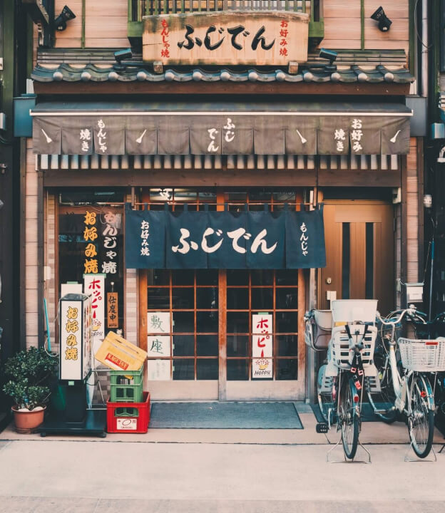
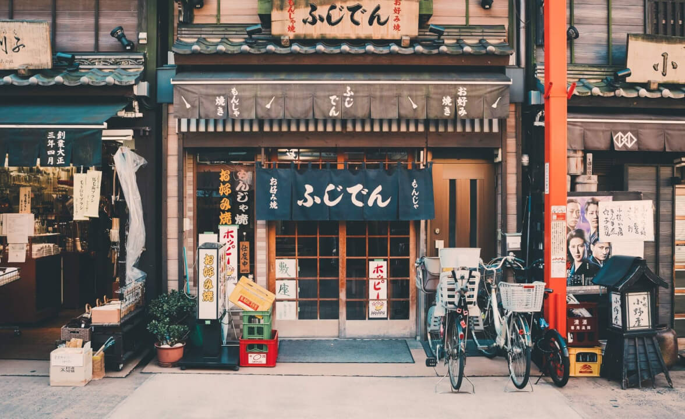
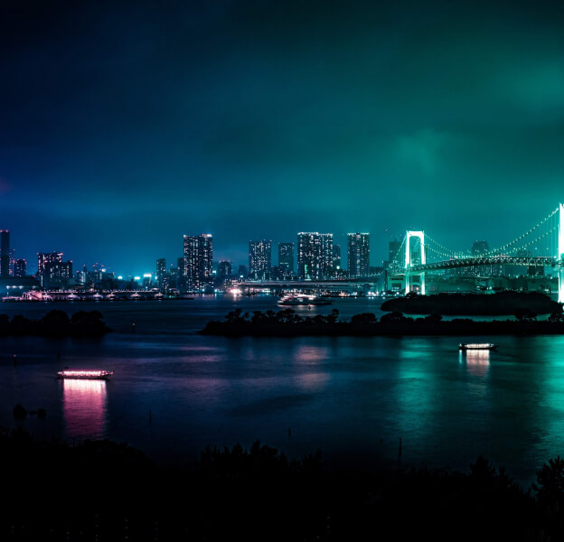
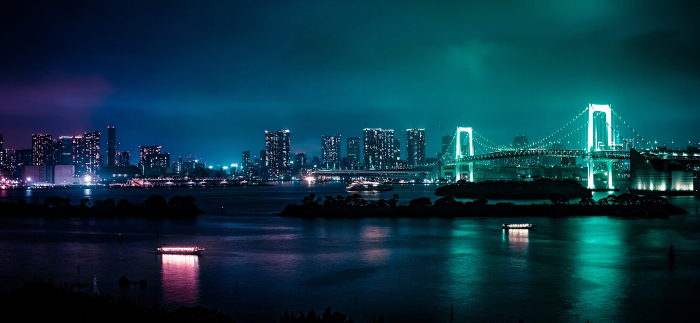
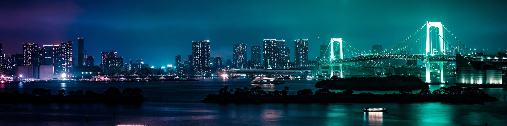

Histórias de viagens de nossos clientes. Inspire-se, encontre
roteiros e dicas! Qual seu próximo destino?
Tokyo
Chegada
Nossa viagem começou no Aeroporto Internacional de Narita,
localizado a cerca de 60 km de Tóquio. Após desembarcar e fazer
todos os procedimentos de imigração, fomos recebidos pela equipe
da Jornada Viagens, que nos conduziu até o nosso hotel.


Acomodação
Nos hospedamos no luxuoso Hotel Okura Tokyo, localizado no bairro
de Toranomon. O hotel possui uma vista incrível para a cidade, e
oferece uma ampla gama de serviços, incluindo um spa, uma piscina,
restaurantes renomados e um lounge bar. Ficamos encantados com a
atenção aos detalhes e a qualidade do atendimento.



Vista da cidade da janela do hotel!
Explorando a cidade
Começamos nosso tour pela cidade com uma visita ao famoso Templo
Sensoji, um dos mais antigos e importantes templos budistas do
Japão. Caminhamos pela rua comercial Nakamise, onde encontramos
muitas lojas vendendo artigos típicos japoneses, como quimonos,
leques e comidas tradicionais. Em seguida, visitamos o icônico
cruzamento de Shibuya, um dos mais movimentados do mundo, onde
observamos a sincronia dos pedestres atravessando a rua. No dia
seguinte, visitamos o Parque Ueno, que abriga o Museu Nacional de
Tóquio, onde pudemos conhecer a história e cultura japonesa. À
noite, fomos a um típico Izakaya, um bar japonês que serve uma
grande variedade de pratos e bebidas.
Compras
Tóquio é famosa por suas lojas de departamento e centros
comerciais, e não podíamos deixar de visitar algumas delas. Fomos
ao famoso distrito comercial de Ginza, onde encontramos lojas das
marcas mais renomadas do mundo. Também visitamos o distrito de
Akihabara, conhecido como o centro de eletrônicos e entretenimento
de Tóquio, onde encontramos diversas lojas de jogos, eletrônicos e
mangás.
Gastronomia
Não se pode falar do Japão sem mencionar sua gastronomia. Tivemos
a oportunidade de experimentar uma grande variedade de pratos
típicos, como sushi, sashimi, lamen e tempura, além de doces
tradicionais como o mochi.
Concluindo...
Nossa viagem a Tóquio com a agência Jornada Viagens foi uma
experiência inesquecível. A equipe da agência cuidou de todos os
detalhes, desde a reserva do hotel até a escolha dos melhores
lugares para visitar e comer. Recomendamos a Jornada Viagens para
todos que desejam fazer uma viagem incrível ao Japão.
Talvez você também goste destes posts...
Osaka
Osaka é uma cidade agitada e moderna no Japãos. A cidade é
famosa por sua gastronomia deliciosa e por ser um excelente
ponto de partida para explorar outras cidades japonesas
próximas.
Hiroshima
Cidade localizada no sudoeste do Japão, conhecida mundialmente
por ter sido o alvo do primeiro bombardeio atômico da história
pelos Estados Unidos. Hoje, a cidade é um símbolo de paz e
reconciliação. Além disso, Hiroshima também é conhecida por sua
gastronomia.
Kyoto
Kyoto é uma cidade localizada no centro do Japão, conhecida por
ser a antiga capital do país e preservar muitas tradições
culturais japonesas. Com seus templos históricos, jardins
tradicionais e cerimônias de chá, é um mergulho na cultura
japonesa.